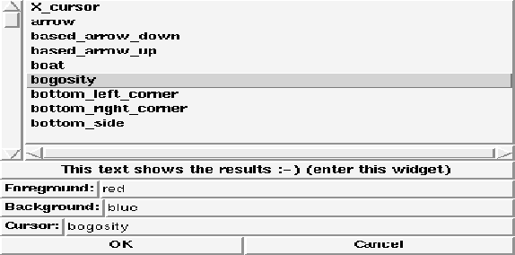
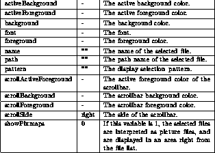

This template defines a new procedure named FontBox. Calling this procedure pops up a dialog box to select a font. The font can be selected from a list, or the different style parameters can be combined from menus. The procedure gets the following parameters:

To configure the different aspects of the font box, there exists a global array named fontBox. A default value of ``-'' means that the Tk default value is used. This array contains elements that control the font box (color, font etc.):

A small example of an invocation may look like this:
FontBox ''/usr/local/lib/Fonts''
This would create the following dialog box:

Figure: The template FontBox